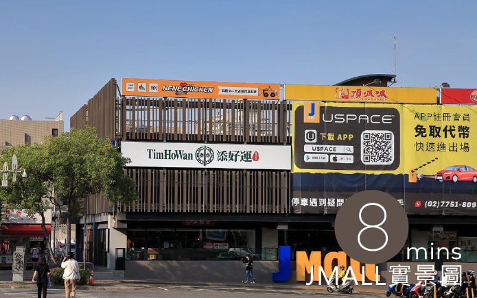
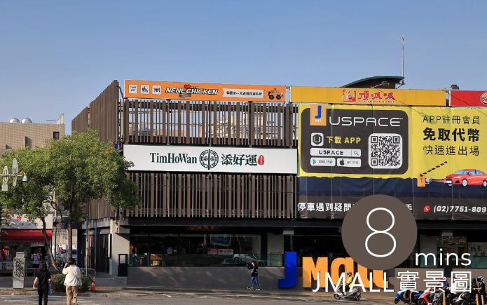

晴山洋洋

漾世紀

從而立邁向不惑之年，茂洋建設不忘建築初心並鑑往知來，取經日本「里山倡議」，
主張城市與自然共存，尊重大地紋理，在最適宜的地段、造出最合宜的房子，願成為
您與⼭之間，最美好的相遇。
晴山洋洋
漾世紀
正處縱橫之心的東海商圈，受惠向上路、台灣大道雙交通命脈而蓬勃發展，
更因周邊空港、雙國道等完善路網簇擁而享有地利之便，未來再迎特五號
開通引流科技新貴西進，為周邊房價再注入活水!
藝文風氣鼎盛、欣欣向榮的東海商圈，喜迎科技新貴!2分鐘-東海商圈輕鬆掌握，
10分鐘-家樂福、JMall、榮總+澄清醫院滿足所有生活所需，菁英生活圈完美成形。
 

將日系簡約結合山的紋理，揉合出最融洽的一席佳作；
頂樓花園與不遠處的連綿山巒相映成趣，誠摯地邀請綠
意至府上作客，如同里山典範，居住精華地段，也能享
有永續森活。
<
>
住戶體驗出發、實用本位至上、精心策畫12項全齡化公設，步入氣派大廳-
彷彿踏入日本皇居旁的虹夕諾雅五星級飯店，讓回家也成為一種享受，不僅
令人放鬆卸下一襲疲倦，更忘卻門外的喧譁嘈雜。